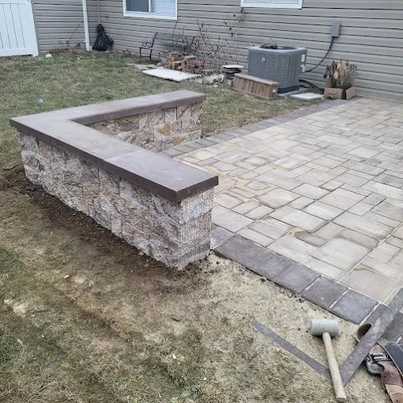
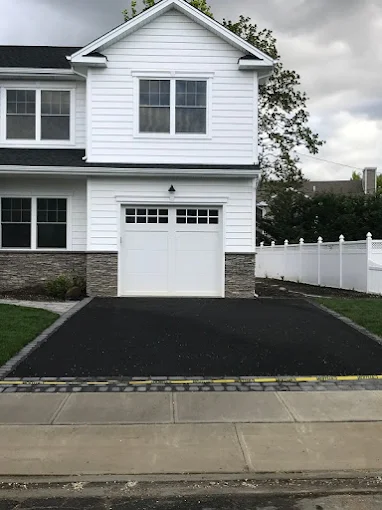

Learn how construction improves the functionality of homes in Syosset, NY. Discover how renovations, home additions, basement remodeling, and new home construction enhance comfort, efficiency, and property value.

Located in the heart of Long Island, the welcoming hamlet of Syosset is known for its quiet neighborhoods, strong sense of community, and convenient connection to New York City. With a population of around 19,000 residents, Syosset offers a suburban lifestyle that blends peaceful living with easy access to major business centers. Many families are drawn to the area for its excellent schools, safe streets, and the comfortable residential environment that makes it ideal for long-term homeownership.
Syosset sits within Nassau County, one of the most desirable counties on Long Island. Residents enjoy access to major roadways and the reliable service of the Long Island Rail Road, which allows commuters to reach Manhattan in under an hour. This accessibility has helped Syosset grow into a sought-after residential area where many homeowners choose to invest in upgrading and improving their properties.
The local climate also plays a role in shaping how homes are designed and maintained. Summers in Syosset are warm and inviting, perfect for outdoor gatherings, while autumn brings vibrant foliage and crisp temperatures. Winters can be cold with occasional snowfall, and spring often arrives with mild weather that encourages homeowners to begin renovation or improvement projects.
Throughout the year, the community hosts local events, school activities, and seasonal celebrations that strengthen neighborhood connections. Because homes play such an important role in everyday life here, many property owners prioritize renovations and upgrades that enhance comfort, functionality, and long-term value. This is where trusted professionals like ORA Construction make a difference, helping homeowners transform their properties through high-quality construction and remodeling services.
Modern homeowners expect their living spaces to do more than simply provide shelter. Today’s homes must support busy family routines, remote work environments, entertainment spaces, and areas for relaxation. When a home is thoughtfully designed and built, it becomes a space that works naturally with everyday life rather than against it.
Construction plays a major role in shaping that experience. Whether the project involves a renovation, expansion, or structural upgrade, the work of a skilled construction company masonry professional or home builder can dramatically improve the way a house functions.
Older homes, especially those built decades ago, often feature compartmentalized layouts that don’t align with modern living preferences.
Narrow hallways, closed-off kitchens, and limited storage can make daily routines feel inefficient. Through strategic construction improvements, homeowners can update these layouts and create more open, adaptable spaces that feel welcoming and practical.
These changes not only enhance comfort but also increase property value and long-term usability.
8 Woodhollow Ln, Huntington, NY 11743, USA
Construction Company
Service, USA
One of the most effective ways to improve home functionality is through carefully planned renovations. These projects focus on redesigning existing spaces to better support daily activities and modern lifestyles.
Kitchen remodeling is a prime example. Many older kitchens were designed primarily for cooking, not for social interaction. Modern construction techniques allow walls to be removed, layouts expanded, and storage improved so the kitchen becomes a central gathering place within the home.
Bathrooms also benefit significantly from renovation. Upgraded layouts, improved plumbing systems, and modern fixtures can transform outdated bathrooms into efficient and comfortable spaces.
Across Long Island, homeowners increasingly turn to concrete home remodeling Long Island specialists to reinforce structural components while refreshing interior designs. These upgrades combine durability with improved aesthetics, ensuring the home remains both functional and visually appealing.
By working with experienced contractors, homeowners can reimagine their living spaces and make everyday routines smoother and more enjoyable.
Ora Construction - Home Remodeling, Masonry & Landscape Design
24 David Drive, Syosset,
NY 11791
Phone Number:
(516) 697-7680
Website:
https://ora-construction.com/
As families grow and lifestyles change, many homeowners begin to feel that their current space no longer meets their needs. Moving to a new neighborhood is not always the preferred solution, especially when residents feel deeply connected to their community.
Instead, many families choose to expand their homes through well-planned construction projects. Working with a trusted home addition contractor Long Island residents rely on allows homeowners to add bedrooms, extend living areas, or create entirely new sections of the house.
Dormers, family room expansions, and second-story additions are common ways to increase square footage while maintaining the character of the original structure.
When completed by an experienced general contractor Nassau County homeowners trust, these projects integrate seamlessly with the existing home design.
Expanding a home in this way provides the extra space families need without sacrificing their connection to the neighborhood they love.
Behind every functional home lies a strong structural foundation. Construction improvements often focus on reinforcing the unseen elements that keep a house safe, durable, and efficient.
Professional builders carefully evaluate foundations, framing systems, and support structures to ensure the home remains stable over time. Skilled specialists such as a masonry contractor Syosset NY homeowners rely on play a crucial role in strengthening walls, walkways, and other structural components.
Masonry work adds both durability and visual character to residential properties. Stone and brick features, reinforced concrete structures, and carefully constructed surfaces contribute to the overall strength and longevity of the home.
These upgrades may not always be visible at first glance, but they play a vital role in maintaining a home’s functionality for generations.
Basements often represent one of the largest untapped areas in a home. When properly renovated, they can become some of the most versatile spaces in the house.
A professionally planned basement remodel Long Island homeowners pursue can transform unused storage areas into comfortable and practical rooms. These spaces can serve as entertainment rooms, guest suites, home offices, or even additional living quarters for extended family members.
Construction professionals focus on key factors such as moisture control, insulation, lighting, and ventilation to ensure the basement feels just as welcoming as the rest of the home.
For many homeowners, a basement renovation provides the additional space they need without altering the existing footprint of the house.

While renovations and additions improve existing properties, some homeowners choose to start fresh with a custom-built residence. Working with an experienced home builder allows families to design spaces that align perfectly with their lifestyle.
New home construction Long Island projects provide the opportunity to incorporate modern layouts, advanced materials, and energy-efficient systems from the very beginning. Open floor plans, spacious kitchens, and multi-purpose living areas are common features of contemporary home designs.
A reputable Nassau County construction company such as ORA Construction manages each stage of the building process—from planning and framing to masonry work and finishing details. This comprehensive approach ensures every element of the home is built with precision and durability.
For homeowners seeking the ultimate level of customization, new construction offers the freedom to create a living environment tailored entirely to their needs.